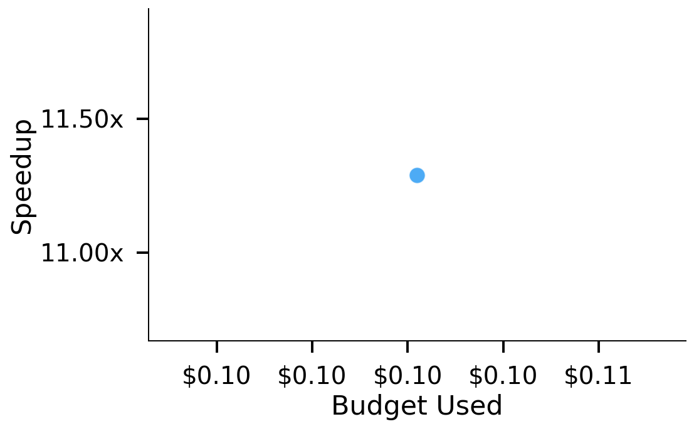
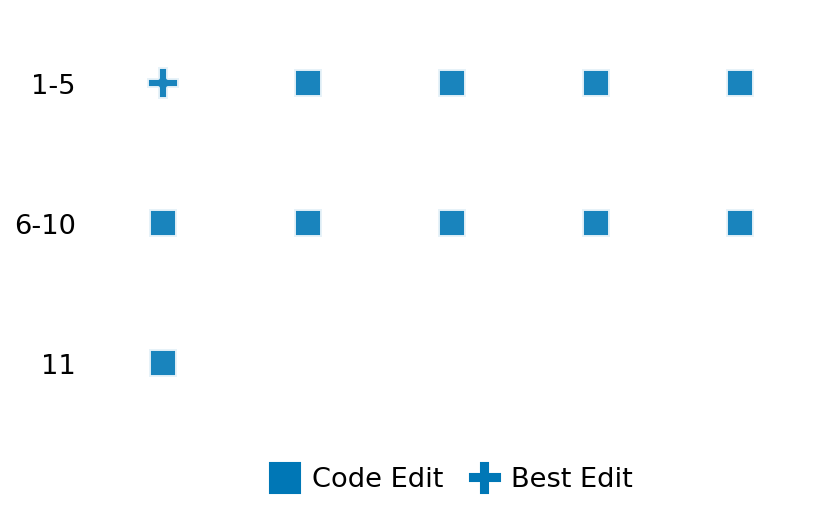

SETTING:
You're an autonomous programmer tasked with solving a specific problem. You are to use the commands defined below to accomplish this task. Every message you send incurs a cost—you will be informed of your usage and remaining budget by the system.
You will be evaluated based on the best-performing piece of code you produce, even if the final code doesn't work or compile (as long as it worked at some point and achieved a score, you will be eligible).
Apart from the default Python packages, you have access to the following additional packages:
- cryptography
- cvxpy
- cython
- dace
- dask
- diffrax
- ecos
- faiss-cpu
- hdbscan
- highspy
- jax
- networkx
- numba
- numpy
- ortools
- pandas
- pot
- psutil
- pulp
- pyomo
- python-sat
- pythran
- scikit-learn
- scipy
- sympy
- torch
YOUR TASK:
Your objective is to define a class named `Solver` in `solver.py` with a method:
```
class Solver:
def solve(self, problem, **kwargs) -> Any:
"""Your implementation goes here."""
...
```
IMPORTANT: Compilation time of your init function will not count towards your function's runtime.
This `solve` function will be the entrypoint called by the evaluation harness. Strive to align your class and method implementation as closely as possible with the desired performance criteria.
For each instance, your function can run for at most 10x the reference runtime for that instance. Strive to have your implementation run as fast as possible, while returning the same output as the reference function (for the same given input). Be creative and optimize your approach!
Your messages should include a short thought about what you should do, followed by a _SINGLE_ command. The command must be enclosed within ``` and ```, like so:
<Reasoning behind executing the command>
```
<command>
```
IMPORTANT: Each set of triple backticks (```) must always be on their own line, without any other words or anything else on that line.
Here are the commands available to you. Ensure you include one and only one of the following commands in each of your responses:
- `edit`: Replace a range of lines with new content in a file. This is how you can create files: if the file does not exist, it will be created. Here is an example:
```
edit
file: <file_name>
lines: <start_line>-<end_line>
---
<new_content>
---
```
The command will:
1. Delete the lines from <start_line> to <end_line> (inclusive)
2. Insert <new_content> starting at <start_line>
3. If both <start_line> and <end_line> are 0, <new_content> will be prepended to the file
Example:
edit
file: solver.py
lines: 5-7
---
def improved_function():
print("Optimized solution")
---
- `ls`: List all files in the current working directory.
- `view_file <file_name> [start_line]`: Display 100 lines of `<file_name>` starting from `start_line` (defaults to line 1).
- `revert`: Revert the code to the best-performing version thus far.
- `reference <string>`: Query the reference solver with a problem and receive its solution. If the problem's input is a list, this command would look like:
```
reference [1,2,3,4]
```
- `eval_input <string>`: Run your current solver implementation on the given input. This is the only command that shows stdout from your solver along with both solutions. Example:
```
eval_input [1,2,3,4]
```
- `eval`: Run evaluation on the current solution and report the results.
- `delete`: Delete a range of lines from a file using the format:
```
delete
file: <file_name>
lines: <start_line>-<end_line>
The command will delete the lines from <start_line> to <end_line> (inclusive)
Example:
delete
file: solver.py
lines: 5-10
```
- `profile <filename.py> <input>`: Profile your currently loaded solve method's performance on a given input. Shows the 25 most time-consuming lines. Requires specifying a python file (e.g., `solver.py`) for validation, though profiling runs on the current in-memory code.
Example:
```
profile solver.py [1, 2, 3]
```
- `profile_lines <filename.py> <line_number1, line_number2, ...> <input>`: Profiles the chosen lines of the currently loaded code on the given input. Requires specifying a python file for validation.
Example:
```
profile_lines solver.py 1,2,3 [1, 2, 3]
```
**TIPS:**
After each edit, a linter will automatically run to ensure code quality. If there are critical linter errors, your changes will not be applied, and you will receive the linter's error message. Typically, linter errors arise from issues like improper indentation—ensure your edits maintain proper code formatting.
**Cython Compilation:** Edits creating or modifying Cython (`.pyx`) files will automatically trigger a compilation attempt (requires a `setup.py`). You will be notified if compilation succeeds or fails. If it fails, the edit to the `.pyx` file will be automatically reverted.
If the code runs successfully without errors, the in-memory 'last known good code' will be updated to the new version. Following successful edits, you will receive a summary of your `solve` function's performance compared to the reference.
If you get stuck, try reverting your code and restarting your train of thought.
Do not put an if __name__ == "__main__": block in your code, as it will not be ran (only the solve function will).
Keep trying to better your code until you run out of money. Do not stop beforehand!
**GOALS:**
Your primary objective is to optimize the `solve` function to run as as fast as possible, while returning the optimal solution.
You will receive better scores the quicker your solution runs, and you will be penalized for exceeding the time limit or returning non-optimal solutions.
Below you find the description of the task you will have to solve. Read it carefully and understand what the problem is and what your solver should do.
**TASK DESCRIPTION:**
Spectral Clustering Task:
Given a similarity matrix representing the relationships between data points, the task is to perform spectral clustering to identify clusters or communities in the data. Spectral clustering works by using the eigenvectors of the Laplacian matrix derived from the similarity matrix to embed the data in a lower-dimensional space, followed by a standard clustering algorithm (like k-means) in this new space.
Input:
A dictionary with keys:
- "n_samples": An integer representing the number of data points.
- "n_clusters": An integer representing the number of clusters to find.
- "similarity_matrix": A list of n_samples lists of numbers representing the similarity matrix where similarity_matrix[i][j] is the similarity between points i and j.
- "true_labels": A list of integers representing the ground truth cluster assignments (provided for validation only, not to be used in the solution).
Example input:
{
"n_samples": 100,
"n_clusters": 3,
"similarity_matrix": [
[1.0, 0.85, 0.23, ...],
[0.85, 1.0, 0.15, ...],
[0.23, 0.15, 1.0, ...],
...
],
"true_labels": [0, 0, 1, 1, 2, ...]
}
Output:
A dictionary with keys:
- "labels": A list of integers representing the cluster assignments for each sample.
- "n_clusters": The number of clusters used in the solution.
Example output:
{
"labels": [0, 0, 1, 1, 2, 2, ...],
"n_clusters": 3
}
Evaluation:
The solution will be evaluated based on:
1. Correctness of the implementation
2. Match between predicted clusters and true clusters (measured by metrics like Adjusted Rand Index and Normalized Mutual Information)
3. Proper handling of the specified number of clusters
4. Efficiency of the implementation
Notes:
- The similarity matrix is symmetric with values between 0 and 1, where higher values indicate greater similarity.
- The diagonal elements of the similarity matrix are 1 (a point is perfectly similar to itself).
- While the true labels are provided for validation, your solution should not use this information for clustering.
Category: graph
Below is the reference implementation. Your function should run much quicker.
import random
from typing import Any
import numpy as np
from scipy.spatial.distance import pdist, squareform
from sklearn import datasets
from sklearn.cluster import SpectralClustering
from sklearn.metrics.pairwise import polynomial_kernel, rbf_kernel
| 01: def solve(self, problem: dict[str, Any]) -> dict[str, Any]:
| 02: """
| 03: Solve the spectral clustering problem using sklearn's SpectralClustering.
| 04:
| 05: Uses the similarity matrix and the target number of clusters from the problem.
| 06:
| 07: :param problem: A dictionary representing the spectral clustering problem.
| 08: Requires keys: "similarity_matrix", "n_clusters".
| 09: :return: A dictionary containing the solution:
| 10: "labels": numpy array of predicted cluster labels.
| 11:
| 12:
| 13: NOTE: Your solution must pass validation by:
| 14: 1. Returning correctly formatted output
| 15: 2. Having no NaN or infinity values
| 16: 3. Matching expected results within numerical tolerance
| 17: """
| 18: similarity_matrix = problem["similarity_matrix"]
| 19: n_clusters = problem["n_clusters"]
| 20:
| 21: if (
| 22: not isinstance(similarity_matrix, np.ndarray)
| 23: or similarity_matrix.ndim != 2
| 24: or similarity_matrix.shape[0] != similarity_matrix.shape[1]
| 25: ):
| 26: raise ValueError("Invalid similarity matrix provided.")
| 27: if not isinstance(n_clusters, int) or n_clusters < 1:
| 28: # Allow n_clusters=1 for edge cases, though typically >= 2
| 29: raise ValueError("Invalid number of clusters provided.")
| 30:
| 31: if n_clusters >= similarity_matrix.shape[0]:
| 32: f"n_clusters ({n_clusters}) >= n_samples ({similarity_matrix.shape[0]}). Returning trivial solution."
| 33: )
| 34: labels = np.arange(similarity_matrix.shape[0])
| 35: elif similarity_matrix.shape[0] == 0:
| 36: labels = np.array([], dtype=int)
| 37: else:
| 38: # Use affinity='precomputed' since we provide the similarity matrix
| 39: model = SpectralClustering(
| 40: n_clusters=n_clusters,
| 41: affinity="precomputed",
| 42: assign_labels="kmeans",
| 43: random_state=42,
| 44: )
| 45: try:
| 46: labels = model.fit_predict(similarity_matrix)
| 47: except Exception as e:
| 48: # Return a fallback solution (e.g., all points in one cluster)
| 49: labels = np.zeros(similarity_matrix.shape[0], dtype=int)
| 50:
| 51: solution = {"labels": labels}
| 52: return solution
| 53:
This function will be used to check if your solution is valid for a given problem. If it returns False, it means the solution is invalid:
import random
from typing import Any
import numpy as np
from scipy.spatial.distance import pdist, squareform
from sklearn import datasets
from sklearn.cluster import SpectralClustering
from sklearn.metrics.pairwise import polynomial_kernel, rbf_kernel
| 001: def is_solution( problem: dict[str, Any], solution: dict[str, Any]) -> bool:
| 002: """
| 003: Validate the spectral clustering solution.
| 004:
| 005: Checks:
| 006: - Solution contains the key 'labels'.
| 007: - Labels array has the correct shape.
| 008: - Labels contain only finite values (no infinities or NaNs).
| 009: - Number of unique clusters is reasonable relative to expected n_clusters.
| 010: - Clustering quality is above random baseline using silhouette score.
| 011: - Similar points (high similarity) tend to be in the same cluster.
| 012: - Solution is not trivial (all same label unless n_clusters=1).
| 013:
| 014: :param problem: A dictionary representing the problem.
| 015: :param solution: A dictionary containing the solution with key "labels".
| 016: :return: True if the solution is valid, False otherwise.
| 017: """
| 018: if "labels" not in solution:
| 019: logging.error("Solution does not contain 'labels' key.")
| 020: return False
| 021:
| 022: student_labels = solution["labels"]
| 023: similarity_matrix = problem.get("similarity_matrix")
| 024: n_clusters = problem.get("n_clusters")
| 025:
| 026: if similarity_matrix is None:
| 027: logging.error("Problem does not contain 'similarity_matrix'.")
| 028: return False
| 029: if n_clusters is None:
| 030: logging.error("Problem does not contain 'n_clusters'.")
| 031: return False
| 032:
| 033: n_samples = len(similarity_matrix)
| 034:
| 035: # Convert to numpy array for checks
| 036: try:
| 037: student_labels = np.asarray(student_labels)
| 038: except Exception as e:
| 039: logging.error(f"Could not convert labels to numpy array: {e}")
| 040: return False
| 041:
| 042: if student_labels.shape != (n_samples,):
| 043: logging.error(
| 044: f"Labels shape mismatch. Expected ({n_samples},), got {student_labels.shape}."
| 045: )
| 046: return False
| 047:
| 048: if n_samples == 0:
| 049: # Check if labels are also empty for the trivial case
| 050: return student_labels.shape == (0,)
| 051:
| 052: # Check for finite values only
| 053: if not np.all(np.isfinite(student_labels)):
| 054: logging.error("Labels contain non-finite values (inf or NaN).")
| 055: return False
| 056:
| 057: # Convert labels to integers and check they are non-negative
| 058: try:
| 059: student_labels = student_labels.astype(int)
| 060: if np.any(student_labels < 0):
| 061: logging.error("Labels contain negative values.")
| 062: return False
| 063: except (ValueError, OverflowError) as e:
| 064: logging.error(f"Labels cannot be converted to non-negative integers: {e}")
| 065: return False
| 066:
| 067: # Check number of unique clusters
| 068: unique_labels = np.unique(student_labels)
| 069: n_unique = len(unique_labels)
| 070:
| 071: # Allow some flexibility: between 1 and 2*n_clusters, but at least reasonable
| 072: if n_unique < 1:
| 073: logging.error("No clusters found in labels.")
| 074: return False
| 075: if n_unique > min(n_samples, max(n_clusters * 2, 10)):
| 076: logging.error(f"Too many unique clusters: {n_unique}. Expected around {n_clusters}.")
| 077: return False
| 078:
| 079: # Check for trivial solutions (all same label) unless n_clusters=1
| 080: if n_clusters > 1 and n_unique == 1:
| 081: logging.error(
| 082: "Trivial solution: all points assigned to same cluster when n_clusters > 1."
| 083: )
| 084: return False
| 085:
| 086: # For very small problems, skip advanced checks
| 087: if n_samples < 3:
| 088: return True
| 089:
| 090: # Check clustering quality using similarity matrix
| 091: # Calculate within-cluster vs between-cluster similarity ratio
| 092: try:
| 093: within_cluster_sim = 0.0
| 094: between_cluster_sim = 0.0
| 095: within_count = 0
| 096: between_count = 0
| 097:
| 098: for i in range(n_samples):
| 099: for j in range(i + 1, n_samples):
| 100: sim_val = similarity_matrix[i, j]
| 101: if student_labels[i] == student_labels[j]:
| 102: within_cluster_sim += sim_val
| 103: within_count += 1
| 104: else:
| 105: between_cluster_sim += sim_val
| 106: between_count += 1
| 107:
| 108: if within_count > 0 and between_count > 0:
| 109: avg_within = within_cluster_sim / within_count
| 110: avg_between = between_cluster_sim / between_count
| 111:
| 112: # Within-cluster similarity should be higher than between-cluster
| 113: # Allow tolerance for noisy data and complex clustering scenarios
| 114: if avg_within < avg_between - 0.2:
| 115: logging.error(
| 116: f"Poor clustering quality: within-cluster similarity ({avg_within:.3f}) "
| 117: f"is much lower than between-cluster similarity ({avg_between:.3f})."
| 118: )
| 119: return False
| 120: except Exception as e:
| 121: logging.warning(f"Could not compute clustering quality metrics: {e}")
| 122: # Don't fail on metric computation errors, but log warning
| 123:
| 124: # Check that the solution is not completely random
| 125: # For this, we verify that high-similarity pairs are more likely to be in same cluster
| 126: try:
| 127: # Get top 10% of similarity pairs
| 128: n_pairs = n_samples * (n_samples - 1) // 2
| 129: if n_pairs > 0:
| 130: similarities = []
| 131: same_cluster = []
| 132:
| 133: for i in range(n_samples):
| 134: for j in range(i + 1, n_samples):
| 135: similarities.append(similarity_matrix[i, j])
| 136: same_cluster.append(student_labels[i] == student_labels[j])
| 137:
| 138: similarities = np.array(similarities)
| 139: same_cluster = np.array(same_cluster)
| 140:
| 141: # Sort by similarity and check top percentile
| 142: top_percentile = max(1, int(0.1 * len(similarities)))
| 143: top_indices = np.argsort(similarities)[-top_percentile:]
| 144:
| 145: # At least 15% of high-similarity pairs should be in same cluster
| 146: # This is a reasonable threshold that prevents completely random clustering
| 147: # while allowing for legitimate clustering variations
| 148: high_sim_same_cluster_rate = np.mean(same_cluster[top_indices])
| 149: if high_sim_same_cluster_rate < 0.15:
| 150: logging.error(
| 151: f"High-similarity pairs are not clustered together: "
| 152: f"only {high_sim_same_cluster_rate:.1%} of top similarity pairs in same cluster."
| 153: )
| 154: return False
| 155: except Exception as e:
| 156: logging.warning(f"Could not compute similarity-based validation: {e}")
| 157: # Don't fail on this check, but log warning
| 158:
| 159: # All checks passed
| 160: return True
| 161:
 AlgoTuner Trajectory
AlgoTuner Trajectory
AlgoTune Task:
spectral_clustering
Model:
Gemini 2.5 Pro
Speedup
9.877x
Total Budget
$1.00
Initial System Prompt
AlgoTune Task Description
Spectral Clustering Task:
Given a similarity matrix representing the relationships between data points, the task is to perform spectral clustering to identify clusters or communities in the data. Spectral clustering works by using the eigenvectors of the Laplacian matrix derived from the similarity matrix to embed the data in a lower-dimensional space, followed by a standard clustering algorithm (like k-means) in this new space.
Input:
A dictionary with keys:
- "n_samples": An integer representing the number of data points.
- "n_clusters": An integer representing the number of clusters to find.
- "similarity_matrix": A list of n_samples lists of numbers representing the similarity matrix where similarity_matrix[i][j] is the similarity between points i and j.
- "true_labels": A list of integers representing the ground truth cluster assignments (provided for validation only, not to be used in the solution).
Example input:
{
"n_samples": 100,
"n_clusters": 3,
"similarity_matrix": [
[1.0, 0.85, 0.23, ...],
[0.85, 1.0, 0.15, ...],
[0.23, 0.15, 1.0, ...],
...
],
"true_labels": [0, 0, 1, 1, 2, ...]
}
Output:
A dictionary with keys:
- "labels": A list of integers representing the cluster assignments for each sample.
- "n_clusters": The number of clusters used in the solution.
Example output:
{
"labels": [0, 0, 1, 1, 2, 2, ...],
"n_clusters": 3
}
Evaluation:
The solution will be evaluated based on:
1. Correctness of the implementation
2. Match between predicted clusters and true clusters (measured by metrics like Adjusted Rand Index and Normalized Mutual Information)
3. Proper handling of the specified number of clusters
4. Efficiency of the implementation
Notes:
- The similarity matrix is symmetric with values between 0 and 1, where higher values indicate greater similarity.
- The diagonal elements of the similarity matrix are 1 (a point is perfectly similar to itself).
- While the true labels are provided for validation, your solution should not use this information for clustering.
Category: graph
Reference Implementation
import random
from typing import Any
import numpy as np
from scipy.spatial.distance import pdist, squareform
from sklearn import datasets
from sklearn.cluster import SpectralClustering
from sklearn.metrics.pairwise import polynomial_kernel, rbf_kernel
def solve(self, problem: dict[str, Any]) -> dict[str, Any]:
"""
Solve the spectral clustering problem using sklearn's SpectralClustering.
Uses the similarity matrix and the target number of clusters from the problem.
:param problem: A dictionary representing the spectral clustering problem.
Requires keys: "similarity_matrix", "n_clusters".
:return: A dictionary containing the solution:
"labels": numpy array of predicted cluster labels.
NOTE: Your solution must pass validation by:
1. Returning correctly formatted output
2. Having no NaN or infinity values
3. Matching expected results within numerical tolerance
"""
similarity_matrix = problem["similarity_matrix"]
n_clusters = problem["n_clusters"]
if (
not isinstance(similarity_matrix, np.ndarray)
or similarity_matrix.ndim != 2
or similarity_matrix.shape[0] != similarity_matrix.shape[1]
):
raise ValueError("Invalid similarity matrix provided.")
if not isinstance(n_clusters, int) or n_clusters < 1:
# Allow n_clusters=1 for edge cases, though typically >= 2
raise ValueError("Invalid number of clusters provided.")
if n_clusters >= similarity_matrix.shape[0]:
f"n_clusters ({n_clusters}) >= n_samples ({similarity_matrix.shape[0]}). Returning trivial solution."
)
labels = np.arange(similarity_matrix.shape[0])
elif similarity_matrix.shape[0] == 0:
labels = np.array([], dtype=int)
else:
# Use affinity='precomputed' since we provide the similarity matrix
model = SpectralClustering(
n_clusters=n_clusters,
affinity="precomputed",
assign_labels="kmeans",
random_state=42,
)
try:
labels = model.fit_predict(similarity_matrix)
except Exception as e:
# Return a fallback solution (e.g., all points in one cluster)
labels = np.zeros(similarity_matrix.shape[0], dtype=int)
solution = {"labels": labels}
return solutionBest AlgoTuner-Generated Code
solver.py
import numpy as np
from scipy.linalg import eigh
from scipy.sparse.linalg import eigsh, ArpackError
import faiss
from typing import Any
class Solver:
def solve(self, problem: dict[str, Any], **kwargs) -> Any:
"""
A faster implementation of Spectral Clustering using `eigsh` and FAISS KMeans.
"""
similarity_matrix = np.array(problem["similarity_matrix"], dtype=np.float64)
n_clusters = problem["n_clusters"]
n_samples = similarity_matrix.shape[0]
if n_samples == 0:
return {"labels": [], "n_clusters": n_clusters}
# Handle trivial cases
if n_clusters <= 0:
return {"labels": [0] * n_samples, "n_clusters": 1}
if n_clusters == 1:
return {"labels": [0] * n_samples, "n_clusters": 1}
if n_clusters >= n_samples:
labels = np.arange(n_samples)
return {"labels": labels.tolist(), "n_clusters": n_clusters}
# 1. Compute matrix for eigen-decomposition (related to Normalized Laplacian)
# Using symmetric normalized Laplacian: L_sym = I - D^(-1/2) A D^(-1/2)
# We find eigenvectors of D^(-1/2) A D^(-1/2)
degree = np.sum(similarity_matrix, axis=1)
with np.errstate(divide='ignore', invalid='ignore'):
d_inv_sqrt = 1.0 / np.sqrt(degree)
d_inv_sqrt[np.isinf(d_inv_sqrt)] = 0
d_inv_sqrt[np.isnan(d_inv_sqrt)] = 0
# This is an efficient way to compute M = D^(-1/2) * A * D^(-1/2)
M = (d_inv_sqrt[:, np.newaxis] * similarity_matrix) * d_inv_sqrt[np.newaxis, :]
# 2. Eigen-decomposition of M
try:
# Use eigsh for efficiency. We need the k largest eigenvectors of M.
eigenvalues, eigenvectors = eigsh(M, k=n_clusters, which='LM', tol=1e-4, v0=np.ones(n_samples), maxiter=2000)
except (ArpackError, ValueError):
# Fallback to eigh if eigsh fails (slower but more robust)
eigenvalues, eigenvectors = eigh(M)
# Get the top n_clusters eigenvectors
indices = np.argsort(eigenvalues)[-n_clusters:]
eigenvectors = eigenvectors[:, indices]
# 3. Normalize the embedding vectors (rows) to unit length
norm = np.linalg.norm(eigenvectors, axis=1, keepdims=True)
# Avoid division by zero
norm[norm < 1e-9] = 1.0
embedding_normalized = eigenvectors / norm
# 4. K-Means clustering using FAISS for speed
embedding_normalized = embedding_normalized.astype('float32')
d = embedding_normalized.shape[1]
if d == 0:
# This can happen if n_clusters=0, though we handled that.
# Or if eigenvectors are all zero for some reason.
return {"labels": [0] * n_samples, "n_clusters": 1}
kmeans = faiss.Kmeans(d, n_clusters, niter=20, nredo=3, seed=42, verbose=False)
kmeans.train(embedding_normalized)
_, labels = kmeans.index.search(embedding_normalized, 1)
solution = {"labels": labels.flatten().tolist(), "n_clusters": n_clusters}
return solutionSpeedup vs Budget Plot
Speedup vs Budget

Action Sequence
